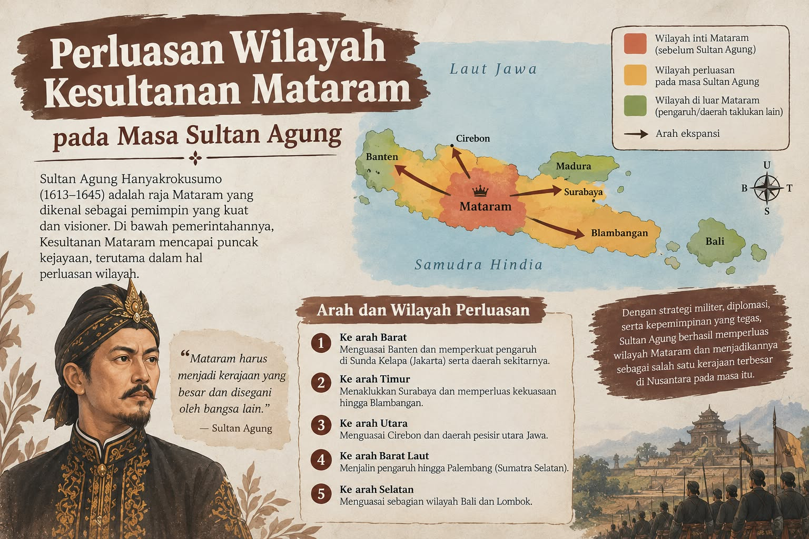
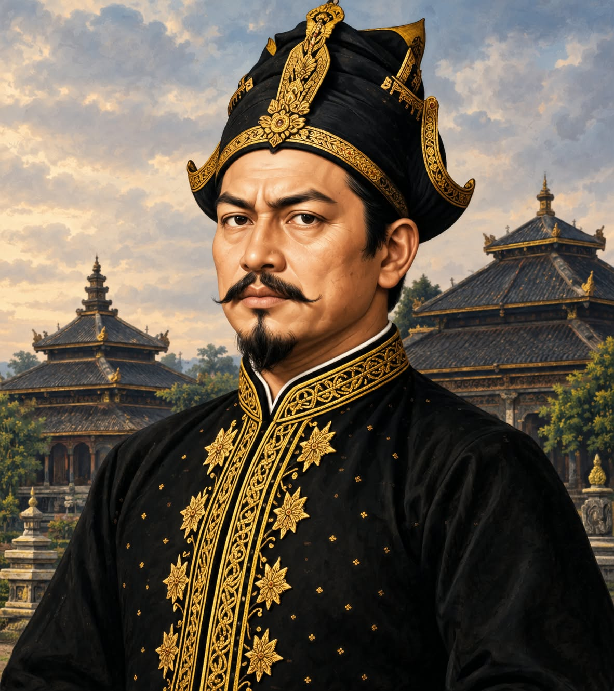
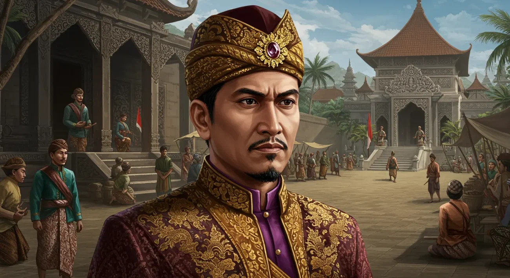
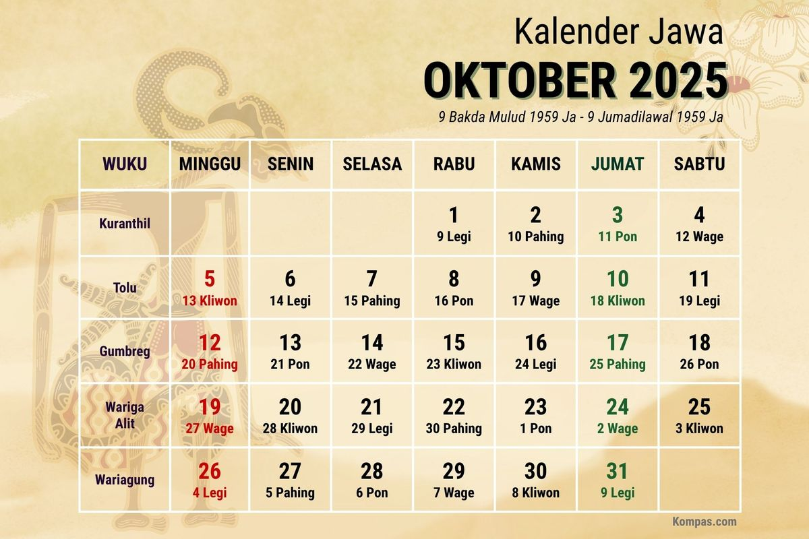
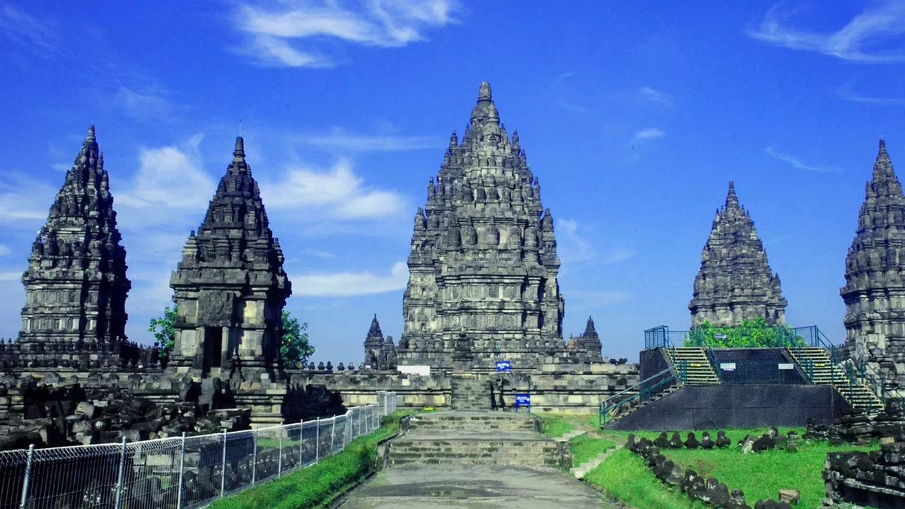

EKSPANSIPerluasan Wilayah
Sultan Agung melakukan berbagai ekspedisi untuk memperluas pengaruh dan kekuasaan Mataram.
Raja Besar, Pejuang, dan Pembaharu
Mengenal sosok Sultan Agung Hanyokrokusumo dan perjuangannya dalam mengembangkan Kerajaan Mataram Islam.
Mulai JelajahSultan Agung Hanyokrokusumo adalah raja terbesar Kesultanan Mataram yang memerintah sekitar 1613–1645. Ia dikenal sebagai pemimpin yang berusaha memperluas wilayah kekuasaan Mataram, memperkuat pemerintahan, serta menentang kekuasaan VOC Belanda di Pulau Jawa.
Sultan Agung merupakan salah satu penguasa penting dalam sejarah Mataram Islam.
Masa Pemerintahan Sultan Agung
Sultan Agung Hanyokrokusumo memerintah Kesultanan Mataram pada 1613–1645. Pada masa pemerintahannya, Mataram berkembang menjadi kerajaan besar di Pulau Jawa. Ia melakukan perluasan wilayah, memperkuat pemerintahan dan militer, serta berusaha menyatukan berbagai wilayah Jawa.
Sultan Agung juga melakukan dua kali serangan terhadap VOC di Batavia, yaitu pada 1628 dan 1629. Selain bidang politik dan militer, ia turut mengembangkan kebudayaan, salah satunya melalui Kalender Jawa yang mulai digunakan pada 1633.
Sultan Agung berjuang untuk memperluas dan memperkuat Kesultanan Mataram serta menyatukan wilayah-wilayah di Pulau Jawa. Ia melakukan berbagai ekspansi ke daerah Jawa Tengah, Jawa Timur, dan Jawa Barat.
Perjuangan terbesarnya adalah melawan VOC di Batavia. Sultan Agung mengirim pasukan untuk menyerang Batavia pada 1628 dan 1629, meskipun kedua serangan tersebut belum berhasil mengalahkan VOC. Selain itu, ia memperkuat pemerintahan, militer, dan mengembangkan kebudayaan Mataram.
Peninggalan Sultan Agung yang terkenal adalah Kalender Jawa yang mulai digunakan pada tahun 1633. Ia juga membangun Makam Raja-Raja Mataram di Imogiri sebagai tempat pemakaman keluarga kerajaan. Selain itu, Sultan Agung meninggalkan pengaruh besar dalam perkembangan kebudayaan dan tradisi Jawa-Islam, serta memperkuat Kesultanan Mataram sehingga menjadi salah satu kerajaan besar di Pulau Jawa.

Klik setiap tahun untuk melihat peristiwa penting dalam perjalanan Sultan Agung.

Pada tahun 1613, Sultan Agung mulai memerintah Kerajaan Mataram Islam. Di bawah kepemimpinannya, Mataram berkembang menjadi salah satu kerajaan besar di Pulau Jawa.
Jelajahi ilustrasi perjalanan Sultan Agung dari Mataram menuju Batavia.
Mataram menjadi pusat kekuasaan Sultan Agung.
GALERI VIDEO
Klik kartu untuk melihat sisi belakang dan membaca penjelasan.

Sultan Agung berperan dalam pengembangan sistem kalender Jawa yang menggabungkan unsur kalender Saka dan kalender Islam.

Masa Sultan Agung menjadi salah satu periode penting dalam perkembangan kebudayaan dan kesusastraan Jawa.

Sultan Agung memperkuat sistem pemerintahan dan menjadikan Mataram sebagai kerajaan yang memiliki pengaruh luas.
Setelah mempelajari sejarah Sultan Agung, lanjutkan ke halaman latihan untuk menguji pemahamanmu.